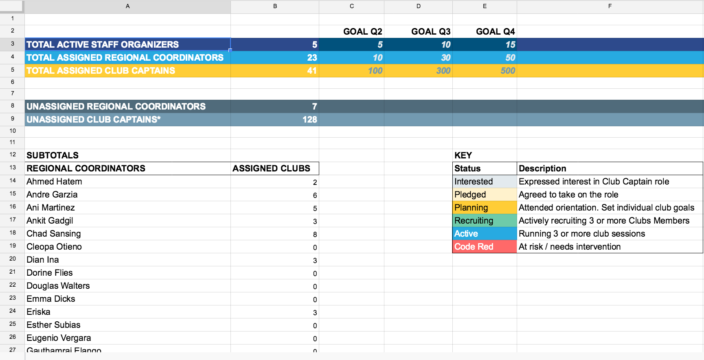
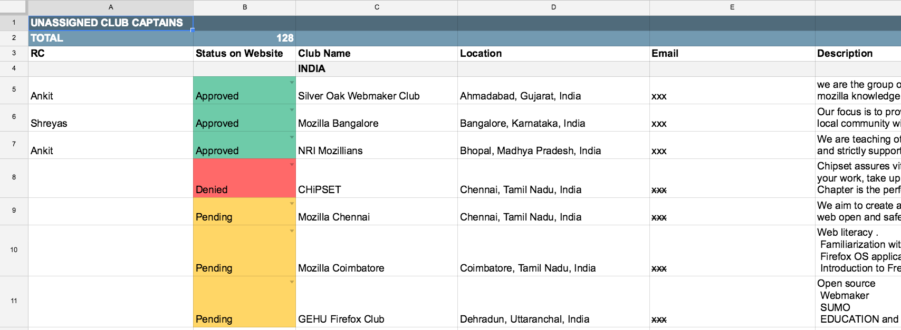

Mozilla Clubs: How to use Central Station
What is Central Station?
Central Station is a shared document to record and coordinate how we serve Club Captains.
When to use it
There are three main reasons to use Central Station:
- Adding Club Captains you recruited.
- Updating the status of Club Captains you serve.
- Reviewing new Club Captains assigned to you.
You might also look at Central Station to see what other Regional Coordinators are doing, how many Mozilla Clubs there are, and to just get an overview of the activity level of the program.
In the future, we hope to have public-facing dashboards for much of this information. In the meantime, we are building and learning what tools we need. If you have feedback or feature requests, let your Staff Organizer know!
How to use it
Getting access
Only Regional Coordinators and Staff Organizers have access to Central Station. If you are in one of those roles and need access, please email teachtheweb [at] mozillafoundation [dot] org.
Overview Tab
The first tab in Central Station gives you an overview of all the Mozilla Club activity. It dynamically updates, so changes you make on your personal tab will update the sums here.
In general, there is nothing you need to edit on this tab.
Your Personal Tab
As a Regional Coordinator, you will have a tab with your name on it. This is your own tab to edit and use to assist you in your role. Please update it every two weeks.
You'll use this tab to:
- Add Club Captains you recruited. Each Regional Coordinator is suggested to serve a minumum of 5, maxiumum of 10 Club Captatins. There is space here for you to add the name, email, contact info, and geographic location of your Club Captains. The information included here is subject to Mozilla's privacy policy, so please familiarize yourself with that.
- Update the status of Club Captains you serve. As you recruit, on-board and support your Club Captains, you should their status in this tab, next to their name. The statuses are: Interested, Pledged, Planning, Recruiting, Active, and Code Red. An explanation of the critiera for each statuses is included in your tab, and your Staff Organizer can assist you if anything is unclear.
Unassigned Club Captains Tab
As a Regional Coordinator, it will also be important to on occassion check the "Unassigned Club Captains" tab. This tab includes people who have expressed interest in running a club. New clubs will be added at various intervals.
You'll use this tab to:
- Review new Club Captains assigned to you. Your Staff Organizer will prompt you if there are new clubs who might be a good fit for you to support or to assist in vetting. Using this tab, you can learn more about those clubs and track whether you want to be assigned to them. Clubs you are already supporting may show up here as well, in which case you are confirming that they are yours.
Next Steps:
I. If a club you are already supporting is on the list, add your name in the first column and copy the club's information over to your tab. Keep the original entry in this Unassigned tab, only striking out the entry so we know it's taken care of.
II. If you want to pick up a new club from the list, do the same as (I). We encourage each Regional Coordinator to support min. 5 / max. 10 clubs each. This is where you can find new clubs to vet and support.
III. If the club is a not a good fit for the program, as established through your introductory interview with them, change the status to "Denied" and then in the notes column, add your name and reasons for denying.
IV. If you are not sure whether the club should be denied or just re-assigned or re-visited, please contact your Staff Organizer to help.
Organizers Tab
This tab is for your Staff Organizer to record their relationships with Regional Coordinators. It is designed to be transparent about who is supporting whom. It also includes a status section, so you and your Staff Organizer can better understand where you're at in being on-boarded and active in the role.
Troubleshooting
Don't be intimated! While this is a somewhat complex spreadsheet, it should hopefully become easy to use once you get familiar with it. In general, you only have to look at and edit your own tab. Your Staff Organizer will guide and support you if any actions are needed on other tabs or if you have questions.
If you think any information can be added to this tutorial to make it better, email us your idea at teachtheweb [at] mozillafoundation [dot] org.
And that's Central Station! Choo-choo!